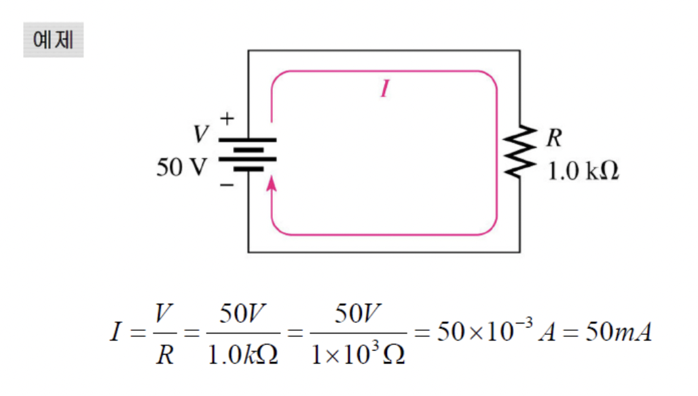

충남대학교 컴퓨터공학과 남병규 교수님의 "전자회로" 강의를 필기한 내용입니다.
강의를 듣고 필기한 내용이기에, 다소 잘못된 부분과 구어적 표현 이 포함되어 있을 수 있습니다.
AC, DC
- AC(Alternating Current) = 교류
- DC(Direct Current) = 직류
- 직류는 전류세기가 상수이기 때문에 신호를 보낼때는 교류를 사용하고 신호를 보낼 때 사용하는 전기의 전원은 안정성을 위해 직류로 받는다(신호표현 교류, 전원은 직류)
Resistance
- R(Resistance) = 저항
- 도선의 길이(l) 에 비례하고
- 단면적(a) 에 반비례함
- 거기에 물질상수(p) 를 곱해주면 저항값이 나온다
- 즉,
R = p * l / a이다
Circuits
- Resistive circuit : 저항이 존재하는 정상적인 회로
- Open circuit : 개방회로 - 중간에 끊어져있어 무한대의 저항을 가지게 되는 회로 - 단선회로
- Short circuit : 단락회로 - 저항이 없어서 무한대의 전류가 흐름(이론적인 상태) - 현실적으로는 도선만 연결되어있는 상태(저항이 없는건 아니지만 아주 작은 값임) 아주 큰 전류가 흐르기 때문에 화재의 위험이 있다 - 쇼트난거
옴의법칙
전압(V) = 전류(I)x저항(R)- 언제나 적용되는 법칙이 아닌 전압과 전류가 선형적인 관계일때 적용되는 법칙이다
- 예를들면 반도체의 경우 전압과 전류가 선형적인 관계가 아니게 되어 옴의법칙이 적용되지 않는다

에너지와 파워
- 에너지(W) : 일을 할 수 있는 능력 그 자체(단위 : J = 줄)
- 파워(P) : 단위시간당 에너지(단위 : W = 와트)
- 에너지 보존 법칙에 따라 사용한 에너지는 소리나 열 등으로 변환된다

- 단위전하당 에너지가 전압이라고 볼 수 있고(기준이 gnd로 동일하므로) 단위시간당 흘러간 전하는 전류이므로 파워 = 전압*전류라고 볼 수도 있다
P = VI와V = IR잘 섞어서 사용하면 파워에 관해 계산할 수 있다
파워 서플라이
- 파워 공급 - 파워를 공급하기에 전압과 전류를 전부 공급한다고 생각해도 된다
- 파워를 공급하기때문에 와트 단위로 공급한다
배터리
- 한쪽에는 이온화 경향이 큰 금속을 두어서 전자가 많이 발생되도록 하고
- 한쪽에는 이온화 경향이 작은 금속을 두어서 자유전자가 적게 하면
- 밀도차이에 의해 전자가 이동해 전류가 발생하게 된다
키르히호프의 전압법칙 (Kirchhoff Voltage Law - KVL)
- 직렬연결 - 소자에 걸리는 전압의 총합은 전원전압과 같다
Vs = V1 + V2 + … + Vn-1 + Vn
키르히호프의 전류법칙 (Kirchhoff Current Law - KCL)
- 접합점 : 병렬연결에서 통로가 나뉘고 합쳐지는 지점
- 병렬연결 - 소자들에 흐르는 전류의 합은 전원전류와 같다 - 접합점으로 들어온 전류는 접합점으로 나가는 전류의 합과 같다
Is = I1 + I2 + … + In-1 + In
직렬연결(Serial Circuit)
- 전류가 흐를 수 있는 경로가 일렬로 연결된 상태
- 저항들이 직렬연결된 경우에 각 저항들의 합은 전체 저항과 같다
- 하나의 경로상에 흐르는 전류는 항상 동일하다
- 전압은 KVL에 의해 분배된다 - 이렇게 전압이 분배되어 걸리는 것을 전압강하라고 한다
- 전압 분배는
v=ir에서 i이 일정하기 때문에 저항의 비율에따라 전압이 분배되어 들어간다. 즉,(부분저항 / 전체저항) * 전체전압 = 부분전압이 된다 - 전압원을 직렬로 연결한 경우 각 전압원의 전압의 합은 전체 전압과 같다
- 전압원의 부호를 반대로 연결하면 마이너스 전압이 된다
- 전류원의 경우 직렬연결을 하는 것은 정의하지 않는다 - 하나의 경로에서 전류가 달라지게 되므로
계산법
- 저항 : 부분저항을 더하면 전체저항이 나옴
- 전류 : 동일 - 전체전압과 전체저항을 구한 후 옴의법칙 적용하면 됨
- 전압 : 부분전압을 더하면 전체전압이 나옴, 부분전압은 전체전압을 저항비로 갈라먹으면 됨
- 전압원 : 전압원의 전압 합이 총전압
- 전류원 : 정의되지 않음
병렬연결(Parallel Circuit)
- 경로가 두개 이상으로 갈라지는 형태
I = v / r이므로 전류는 저항의 역수에 비례한다.- 저항의 역수를 Conductance(C, 전도도) (전류를 얼마나 잘 흘려주는지의 척도)라고 하며전도도 비율에 따라 전류가 분배된다
부분전도도 / 전체전도도 * 전체전류 = 부분전류
- 저항을 병렬로 연결하면 경로가 여러개 되는 것이므로 단면적이 커지는 효과가 되어 저항값이 작아진다
- 합성저항값은 저항이 작은쪽에 가깝게 설정된다 - 저항이 작은쪽이 전류가 흐르기 쉬우므로
- KCL을 이용해 유도해보면 합성저항의 역수 = 부분저항의 역수의 합이 된다
- 즉, 전체전도도 = 부분전도도의 합
||를 병렬저항에서의 합성저항 연산자로 표현한다R1 || R2는 병렬로 연결된 R1과 R2를 합성한다는 의미이고 이것의 결과가 합성한 저항의 총 저항값이다
- 전압원을 병렬하는것도 마찬가지로 정의하지 않는다
- 전류원을 병렬연결한 경우 총 전류는 전류원들의 전류 합과 같다
계산법
- 저항 : 역수 두번취한다고 생각 - 역수취해서 더하고 그거 역수
- 전류 : 부분전류를 더하면 전체전류가 나옴, 부분전류는 전체전류 저항의 역수로 갈라먹음
- 전압 : 동일 - 전체전류와 전체저항 구해서 옴의법칙써라
- 전류원 : 전류원 전류 합이 총전류
- 전압원 : 정의되지 않음
예제